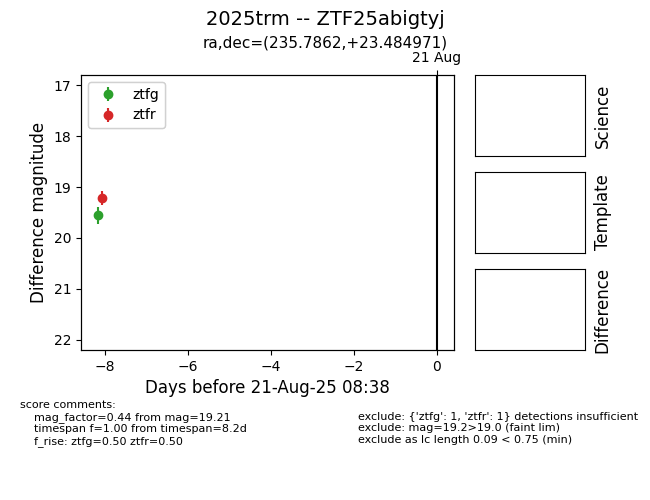

Target 2025trm at 2025-08-21 08:38, see:
FINK: fink-portal.org/ZTF25abigtyj
Lasair: lasair-ztf.lsst.ac.uk/objects/ZTF25abigtyj
ALeRCE: alerce.online/object/ZTF25abigtyj
TNS: wis-tns.org/object/2025trm
YSE: ziggy.ucolick.org/yse/transient_detail/2025trm
alt names
ZTF25abigtyj (ztf,alerce)
2025trm (tns,yse)
coordinates:
equatorial (ra, dec) = (235.7862,+23.48497)
galactic (l, b) = (37.3664,+51.20603)
photometry
last ztfg=19.55, ztfr=19.21
1 ztfg, 1 ztfr detections
